Welcome to Character Bookshelf
A portable library for your novels, character profiles, relationships, and timelines. Your information stays in the storage folder you select.
- Open the app using current Chrome or Edge over HTTPS (or localhost).
- Choose Select location and select a writable folder or USB drive. Approve the browser permission request.
- Character Bookshelf opens or creates its own Character Bookshelf subfolder.
- On the writer selection screen, choose your writer or create a new profile.
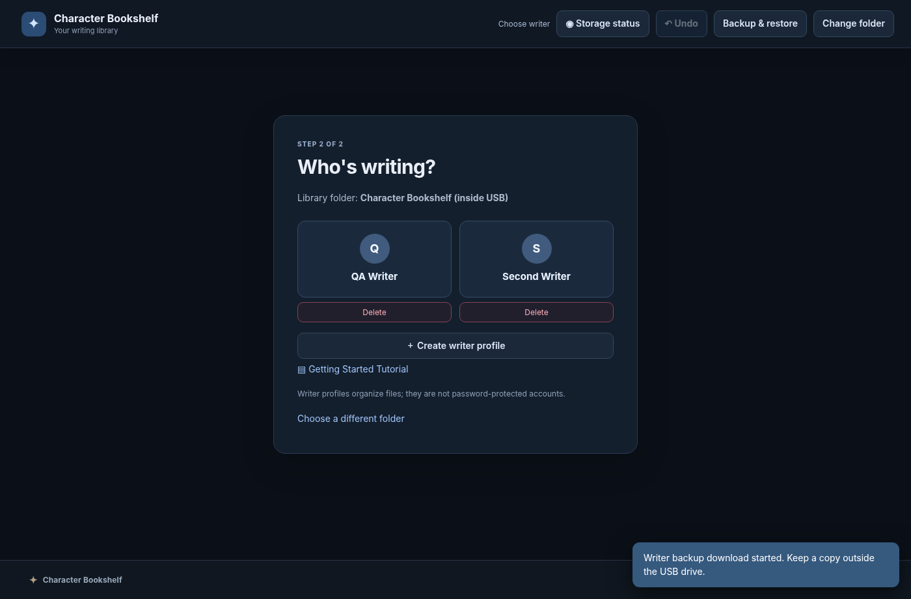
Nothing opens the tutorial automatically. Close it whenever you like, and use the topic links on the left to jump directly to a feature.
Writer Profiles
Writer profiles separate different people’s libraries. They're organizational profiles, not password-protected accounts.
- After choosing storage, select Create writer profile.
- Enter the writer’s name and open their bookshelf.
- Use Switch writer when moving between libraries.
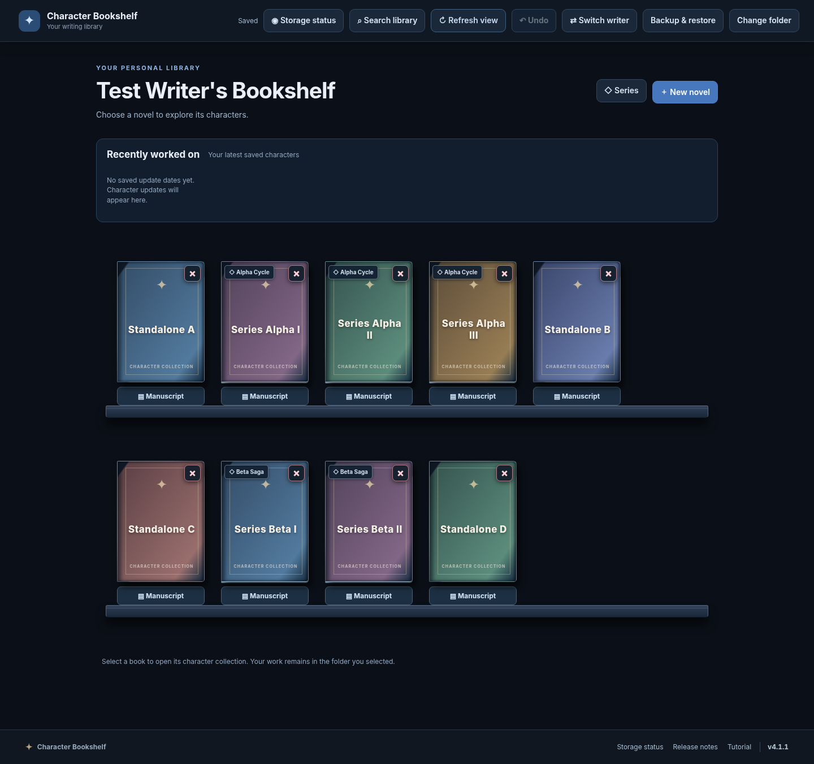
Books & Characters
- Choose New novel on the bookshelf to create a book.
- Select its cover to open the character gallery.
- Choose New character and enter the name.
- Fill in the six profile sections and allow the save status to confirm your changes. New characters have general questions about the Lie, Truth, Want, Need, formative experiences and starting circumstances. Earlier characters retain their original questions; all characters have an optional freeform Character arc type.
- Optional: add Aliases & nicknames under Basic Information, separated with commas, semicolons, or new lines. Only variations you enter will be searched in the manuscript.
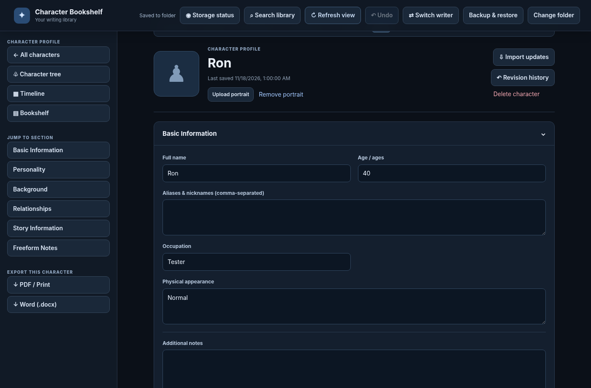
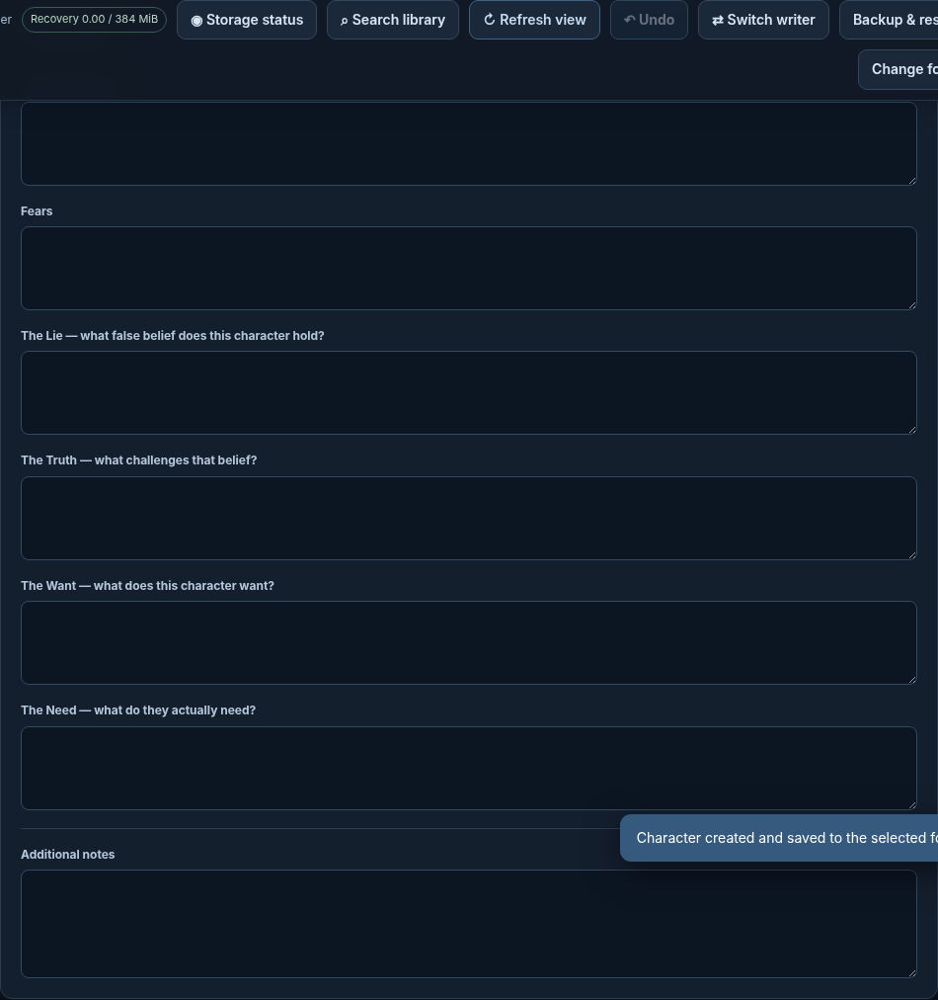
To rename a book, open its character gallery and hover over the book title (or use the pencil shown on touch screens). Click the title, enter the new text, and save or cancel. This doesn't rename the underlying storage folder. You can also add your own comma-separated Character tags in Basic Information, then use Filter by tag in the character gallery.
Images and book covers are optional. A character you copy between novels becomes a separate profile, so editing one does not modify its counterpart.
Using Character Bookshelf on a Phone
The mobile interface is designed to keep your writing library readable on smaller screens. All of your writer, book, character and manuscript files remain in the same storage location; the mobile update changes the layout, not how your data is stored.
- At the top of the screen, check the always-visible save and recovery status. Tap ☰ Menu to reveal Storage Status, Search Library, Refresh View, Undo, Backup & Restore and other available application actions. Tap × Close to return to a compact header.
- On your bookshelf, swipe sideways through Recently Worked On cards and book covers when more items extend beyond the screen. Linked series books still share the ordinary bookshelf.
- Open a book to find its title above a two-column arrangement of actions. New character has a larger, full-width touch target.
- Character Tree, Timeline, Manuscript, Novel Notes, Export PDF and Export Word are arranged in a tidy button grid. Character cards display in two columns on common phone sizes.
- You can still use Tutorial at the bottom of the page whenever you need it. The pop-out guide works where your browser allows new windows.
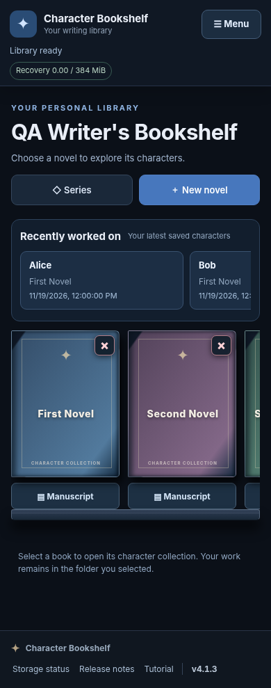
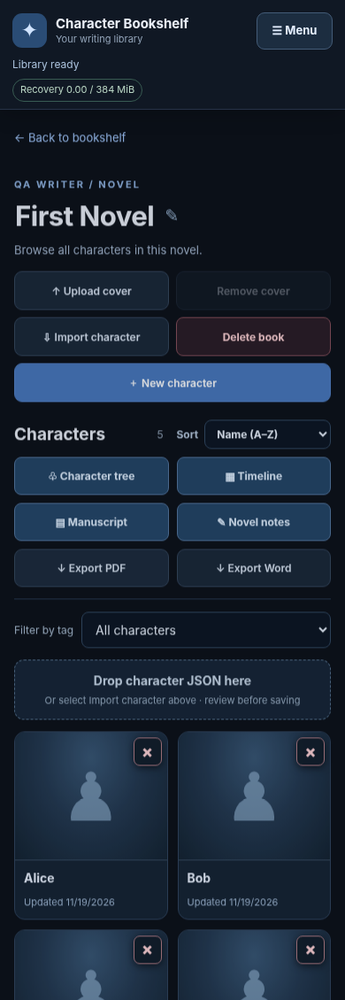
Novel-Wide Notes
Keep general notes about your novel without attaching them to a character, a timeline entry or a manuscript passage.
- Open the novel’s character gallery and select Novel notes.
- Click Add note, enter your text, and select Save note.
- You can edit or delete notes later. These notes are stored in a separate JSON file inside the same novel folder.
- Search library also finds your novel notes, and they are included in writer ZIP backups and recovery snapshots.
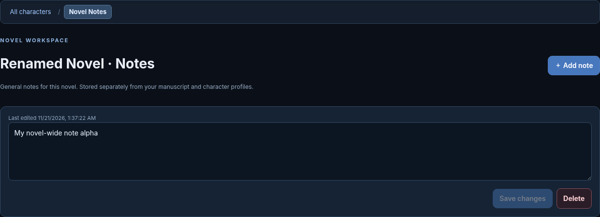
Character Tree
The Character Tree creates a visual map from the relationships stored in your character profiles.
- Open a novel and choose Character tree.
- Drag cards to arrange them, or drag one card onto another to create a relationship.
- Choose relationship types and notes in the connection editor.
- Use the legend for relationship colors, or export the tree to PNG or PDF.

Timelines
Timelines organize structured events. Freeform notes are never automatically converted into timeline entries.
- Open a novel’s Timeline.
- Choose Add Event and enter a title. The year and date are optional.
- Choose characters associated with the event and save it.
- Use All Characters or By Character to change the view.
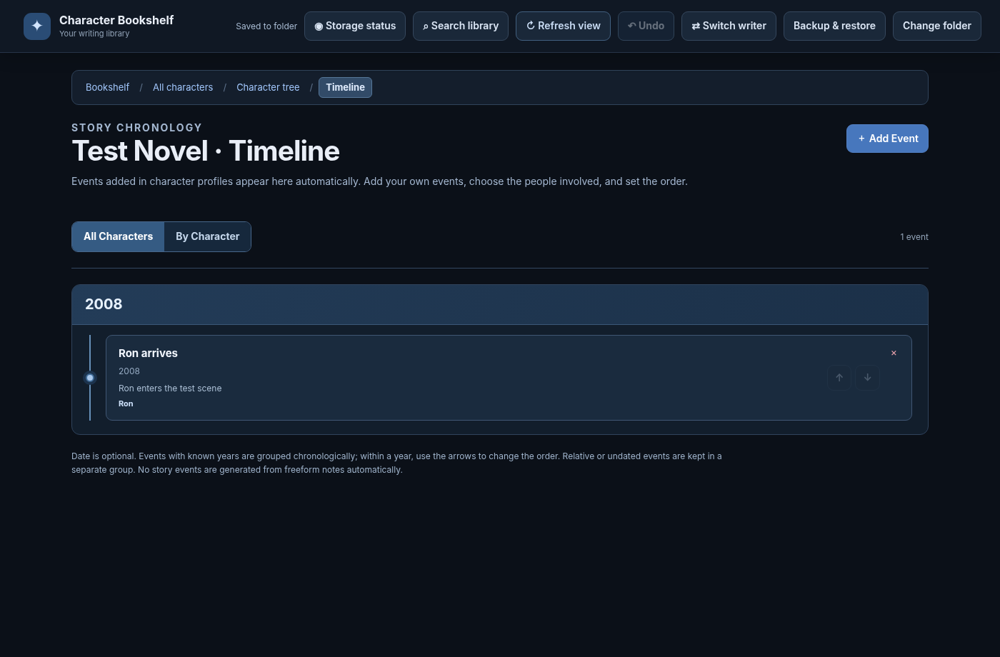
An event without a sortable year remains undated; the application does not invent one. You can edit it later from its original book.
Novel Series
Series are optional. Linked novels remain on your regular bookshelf, next to their series companions. Look for the small ◇ series label on a book cover; select that label to open its Series page. No separate series-only shelf is created, and no novel files are moved or merged.
- On the bookshelf, choose Series, then New series.
- Link existing novels using Link book; move their order with the arrow controls. Return to your regular bookshelf and select the subtle series label on any linked cover to reopen that Series page.
- Choose a source book, character, and destination book, then select Copy character.
- Open the destination book to edit the copied profile independently.
- See dated events from all member novels under Combined series timeline. Events with no sortable year appear under Undated / relative events, labeled by book.
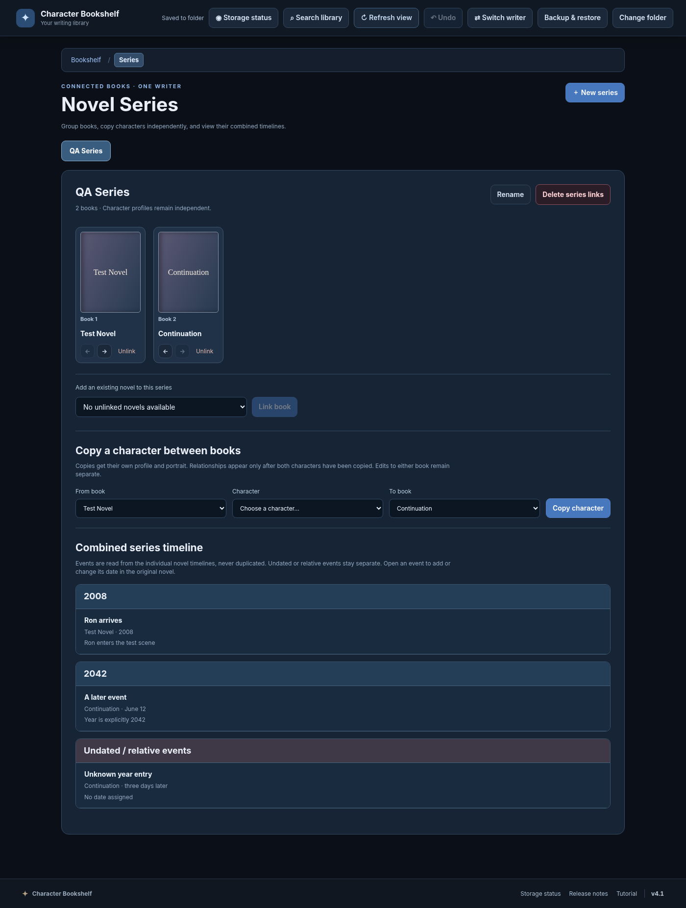
Manuscript Reader
Import a separate read-only copy of a DOCX, TXT, or PDF manuscript into a novel. Your original document stays wherever you keep it.
- Open the book’s Manuscript page.
- Drop a PDF, DOCX or TXT file into the import area, or select Import manuscript to browse for one (up to 64 MiB). Replacing an existing copy requires confirmation.
- For TXT and DOCX, select a character on the right to see mention counts, grouped previews, and Next/Previous controls. Choose a preview to jump and highlight the mention.
- Use the chapter navigation and text-size controls for easier reading.
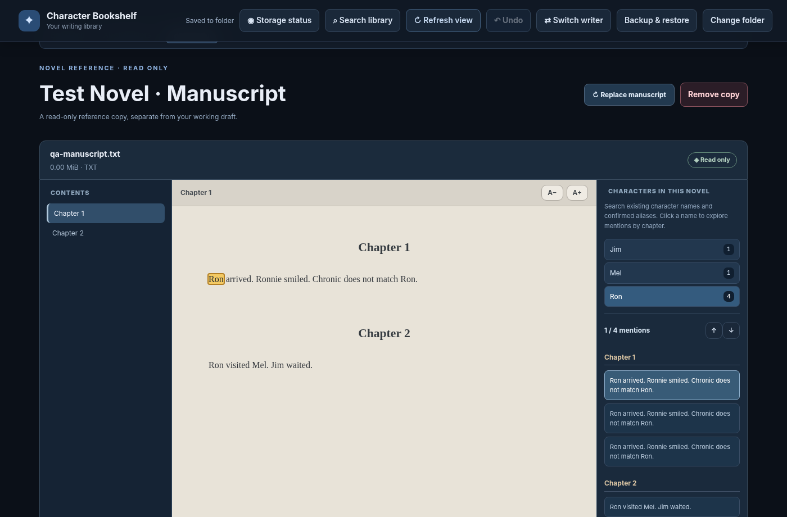
Manuscript Notes & Annotated Export
Manuscript notes belong to the novel, not the imported document. Your original text is not changed when notes are created or edited.
- For TXT and DOCX, highlight text within one paragraph and select Passage note. Type your note and save it.
- Select Chapter / page note to attach a general note to the current chapter; on PDFs, this becomes a page note instead.
- Use Go to location, Edit, or Delete on saved notes.
- When a manuscript is replaced, Character Bookshelf compares the saved quote and surrounding text. Clearly identified quotes are relocated. Ambiguous matches need your review, and missing text is marked Unlinked without deleting the note.
- For TXT and DOCX, choose Export annotated PDF, then choose Print / Save as PDF in the new tab to create a printable copy with notes beside the corresponding paragraphs.
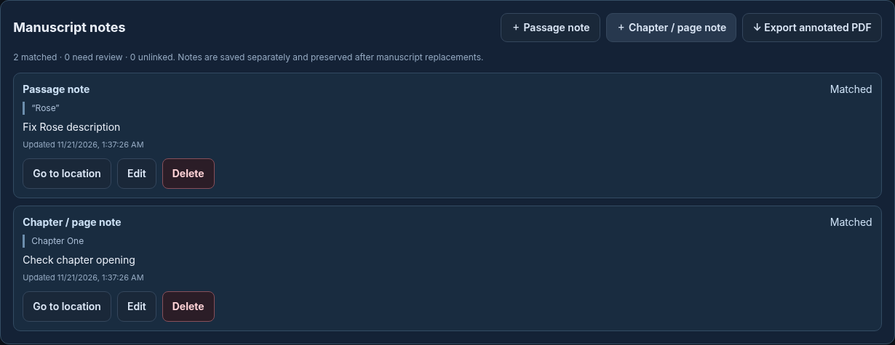
Search & Imports
Universal Search searches names, character fields, relationship information, novel titles and timeline events for the selected writer. Whole-word matching avoids false hits such as searching for “Ron” inside “chronic.”
- Choose Search library from the navigation.
- Enter a word or phrase and select Search.
- Click a result to open the matching character or event.
- Use Refresh View after editing files from another program to rebuild the temporary search index.
You can also drag and drop a character JSON file into the Character Gallery, or use Import character. Proposed edits can be compared with saved profiles before changes are committed. Nothing is automatically merged. Dragging does not bypass duplicate review.
Backups & Recovery
Protect your library by keeping verified backups separate from your primary USB drive.
- Select Backup & restore.
- Export the current writer's ZIP. It includes characters, trees, timelines, portraits, book covers, series metadata, and imported manuscript copies.
- Store the backup on a different device and periodically verify its contents.
- Check Storage status to see verified writes, recovery completeness, and the live RAM snapshot size in MiB (out of 384 MiB). The compact usage figure also appears near the save status in the header.
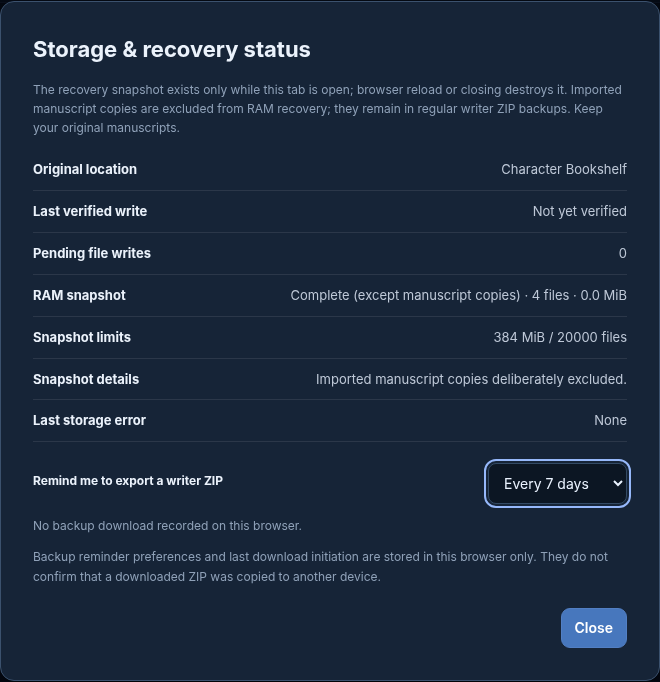
If the USB drive disconnects or a save fails, leave the tab open. Follow the on-screen recovery instructions and save recoverable files to a different location if offered. Some recovery copies may be incomplete. Wait for Saved before safely ejecting storage.
What's new in v4.2.0
Open World maps from a novel’s Characters page or from a selected Series. Create a blank canvas (optional grid and basic shape) or import a licensed map image. Draw with Pencil, add Text labels and lightweight Stamps, move objects, and undo. Copy maps between series and linked books without synchronization. On a Series map, use Combined Copy first, then choose Combine Annotations to preview an all-or-selected import; Undo reverses the operation.
World Maps stores editable JSON separately from map images in the selected writer folder’s world-maps/ directory. A full writer ZIP includes both. Volatile RAM recovery intentionally excludes image files; if the source image is missing in a recovered library, an Unlinked notice shows its original filename and offers re-link, convert to blank, or start-over choices.
Exports: PNG, SVG or browser Print/Save as PDF. Choose complete map or annotations only. Only include images you have permission to reproduce. Large PNG exports have memory/dimension limits; SVG remains available.
Many map interactions work with touch, but detailed tracing is most practical on a desktop. Real USB/Android acceptance testing remains the user's responsibility.
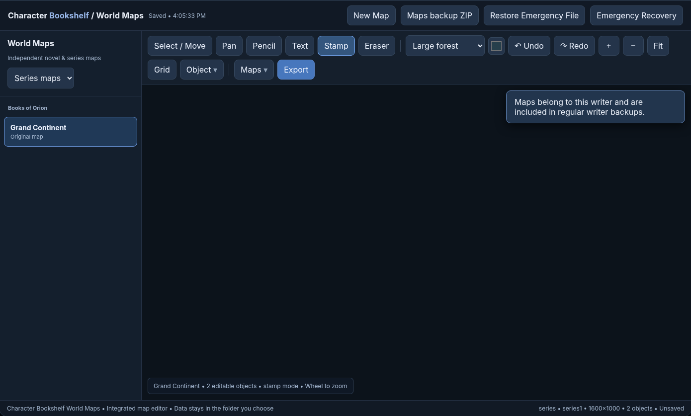
World Maps interface and tool fixes (v4.2.2)
World Maps now opens as a full-page workspace rather than a modal. Use the Back button to return to the current novel or series. The map list can be collapsed to give the canvas more room, and the drawing toolbar uses compact single-line controls with a View menu for Fit, zoom and the editor grid.
Interaction: use Select to drag an existing label, shape or stamp; Pan to move the visible map; Pencil to draw freehand; and Eraser to click the annotation you want removed. The eraser acts on the clicked annotation, not on the imported image. Pencil now uses a distinct cursor. Undo and Redo are available on the compact toolbar.
Stamps: the symbols now use restrained monochrome cartographic linework. Forests and other clusters remain one saved object each. The optional editor grid is a visual guide only and is never included in PNG, SVG or browser Print/Save as PDF outputs, even when it is visible while editing.
Characters page: navigation and action buttons are smaller and use single-line labels when space allows. The established bookshelf and other editing pages retain their styling.
This release was checked with source-level and pure map-data tests. Real browser pointer gestures, mobile use and physical USB workflows still require hands-on testing before relying on it with important writing data.
World Maps startup repair (v4.2.2)
This hotfix repairs a JavaScript syntax error in v4.2.1 that prevented the editor, existing map list, New Map and drawing tools from initializing. It also shows a visible warning if required map scripts fail to load or the writer folder cannot be reached. Your existing map files remain in the writer’s local world-maps/ folder. Do not choose a different folder to recover missing maps; return to Character Bookshelf and open World Maps from your novel or series.
If the previous broken view persists after deployment, confirm the complete release files were published and hard-refresh Edge or Chrome.
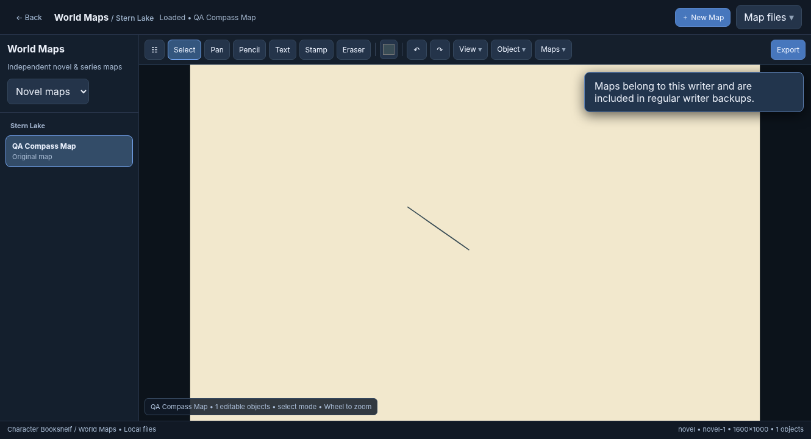
New in v4.2.3 — World Maps & Bookshelf usability
World Maps: Drag empty map space to pan (there are no separate Select/Pan buttons); use the mouse wheel to zoom. Fit to Screen now stays visible. Double-click an existing stamp, label, or shape to select it; drag a selected object to move it. Text opens immediately for editing on double-click, even after reopening a saved map. Click empty space or press Escape to deselect. Activate Pencil, Text, Stamp or Eraser by clicking its tool, then click the same tool again or press Escape to return to navigation.
Copy/Paste: With an object selected, use Ctrl+C to copy, Ctrl+V to paste, or Ctrl+D to duplicate. On Mac, use Command instead of Ctrl. The Object menu also has Copy, Paste, Duplicate, size and rotate controls. Copied objects preserve color, stamp type, size and rotation; each pasted copy is independent. Enlarging and then shrinking returns to the original size and center.
Bookshelf: Cover sizes now adapt to the number of novels and available width. The Spine view control switches to compact spines when you want greater density; choose Cover view to switch back. The preference is saved locally for each writer. Series groups remain together when possible. Neither mode changes the writer's novel files or series links.
Recovery: The toolbar indicator now shows decimal MB values (for example, the same 384 MiB internal budget displays as 402.65 MB). It still represents temporary RAM recovery, not a backup, and recovery contents/limits are unchanged.
This build was exercised with isolated browser DOM and simulated local-folder objects. Real drive access, Android gestures, file-permission errors and full deployed-site behavior require hands-on acceptance testing.
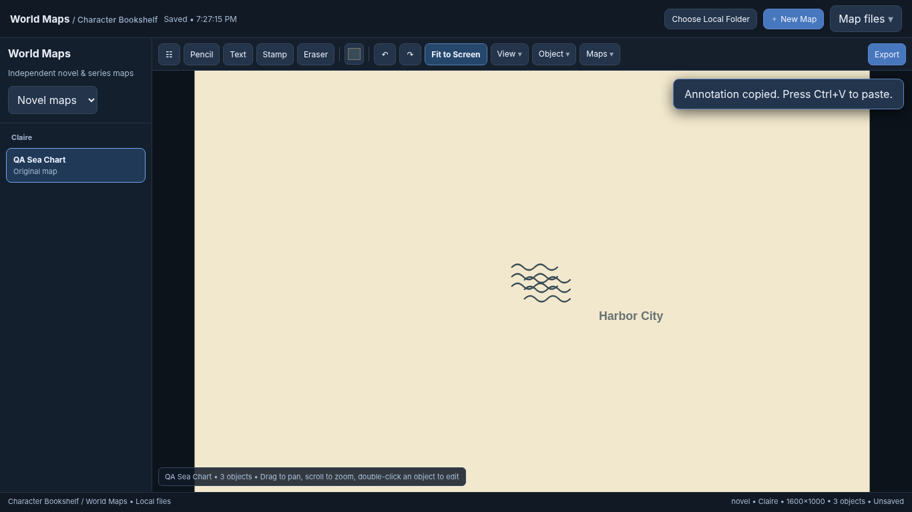